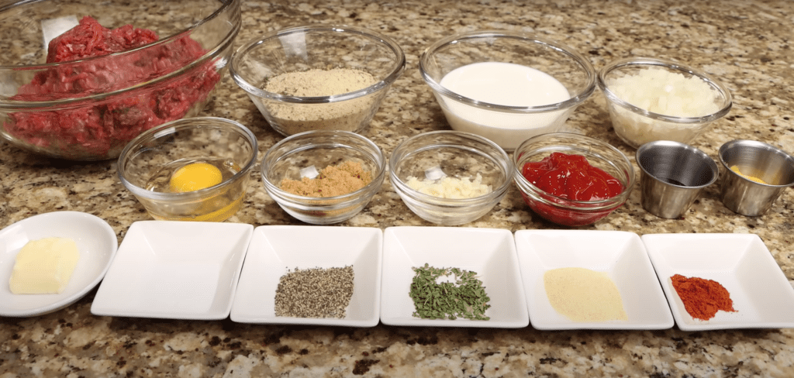

The Perfect Meatloaf Recipe
- Gather Ingrediants

- Pre Heat the oven to 350 degrees
- using medium heat bring your pan to temperature then add the butter
- saute your onions and garlic for two minutes before adding them to the ground beef
- after two minutes remove your onion and garlic from the pan and set them aside until later
- in a small bowl combine your brown sugar mustard and ketchup
- whisk until well combined and set it aside until later
- to the beef add your paprika, parsley, garlic powder, salt and pepper
- add the Worcestershire sauce, the onion and garlic mixture then mix until well combined
- add the half and half, egg and bread crumbs and mix well
- Allow your mixture to sit in the refrigerator for 30 minutes before forming a loaf
- after 30 minutes remove it from the refrigerator then form your loaf
- transfer your loaf to a wire rack then top with the sauce
- transfer to the preheated oven and allow it to cook for one hour
Back to the main page